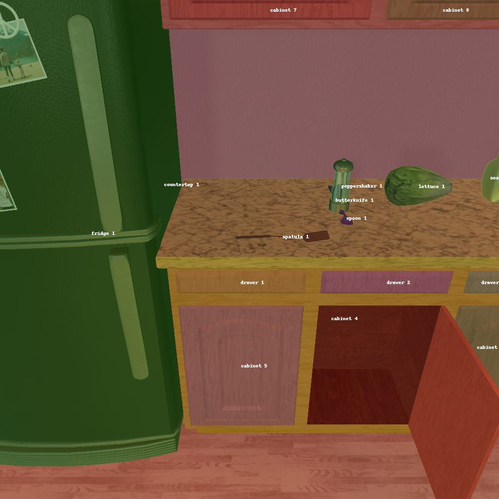

---------------------------------------------------------task: 23---------------------------------------------------------
--------------------------------------------------------------------------------------------------------------------------------------------------------------------
--------------------------------------------------------------------------------------------------------------------------------------------------------------------
Step:--------------------------------------------------------------------------16-------------------------------------------------------------------------------
----------------------------------------
VLM Prompt:
Image1:
Image2:
Image3:
**Instruction**
1. Analyze the provided image to identify all visible household objects, focusing on those relevant to the task description "heat some mug and put it in coffeemachine."
2. Use the analysis of the image and the task hint "The agent must find an object of the desired type, pick it up, go to a microwave, heat the object with the microwave, then find the correct location to place it, and put it down there. The agent does not need to use the microwave button or open the microwave to heat the object, and the agent just needs to do action that is "heat the object with the microwave"." to answer the question: what is the most reasonable action in the choices for the task description "heat some mug and put it in coffeemachine"?
4. Decide and write the answer using the template: The answer is: (i): , where i is the real number. If there is no desired object in the image, search every place based on **Initial Observation** to find the object. And if no one is exactly correct, choose a similar answer.
**Initial Observation**
You are in the middle of a room. Looking quickly around you, you can see cabinet (1-15), fridge (1), countertop (1-4), drawer (1-4), microwave (1), toaster (1), coffeemachine (1), garbagecan (1), sink (1), stoveburner (1-3), sinkbasin (1)
**Answer Choices**
(1): go to cabinet 3
(2): go to fridge 1
(3): go to countertop 1
(4): go to cabinet 5
(5): go to cabinet 6
(6): go to cabinet 7
(7): go to drawer 1
(8): go to drawer 2
(9): go to cabinet 8
(10): go to drawer 3
(11): go to cabinet 9
(12): go to cabinet 10
(13): go to drawer 4
(14): go to microwave 1
(15): go to cabinet 11
(16): go to toaster 1
(17): go to cabinet 12
(18): go to cabinet 13
(19): go to cabinet 14
(20): go to cabinet 15
(21): go to countertop 2
(22): go to coffeemachine 1
(23): go to garbagecan 1
(24): go to countertop 3
(25): go to countertop 4
(26): go to sink 1
(27): go to stoveburner 1
(28): go to stoveburner 2
(29): go to stoveburner 3
(30): go to sinkbasin 1
(31): open cabinet 4
(32): close cabinet 4
(33): take lettuce 1 from cabinet 4
(34): take peppershaker 1 from cabinet 4
(35): take soapbottle 1 from cabinet 4
(36): take spatul1 from cabinet 4
(37): take spoon 1 from cabinet 4
(38): take butterknife 1 from cabinet 4
(39): examine cabinet 4
**Answer**
Let's think step by step by following the instructions.
----------------------------------------
----------------------------------------
Original Response:
Firstly, we need to find a mug to heat. Based on the initial observation, mugs are typically found in cabinets or on countertops. From Image1, Image2, and Image3, we can see the contents of cabinet 2, cabinet 3, cabinet 4, and countertop 1. Cabinet 2 and 3 are empty, and cabinet 4 contains some utensils and a lettuce, but no mug. Countertop 1 has a spatula, but no mug is visible.
Since there is no mug in the visible areas, we should search other likely locations based on the initial observation. Cabinets are the most common place to find mugs, so we should check the remaining cabinets. The closest unopened cabinet to the visible ones would be cabinet 5.
The most reasonable action from the choices given would be to go to cabinet 5 and search for a mug there.
The answer is: (4): go to cabinet 5
----------------------------------------
----------------------------------------
>>> Refine Original VLM Response and Get Pure Action: go to cabinet 5
----------------------------------------
-----------------------------------------------------------------
Running time: 8.985758304595947 seconds
Total Money: 15.095770000000007
-----------------------------------------------------------------
-----------------------------------------------------------------
Text Observation:You arrive at loc 6. The cabinet 5 is closed.
-----------------------------------------------------------------
UNSUCCEED